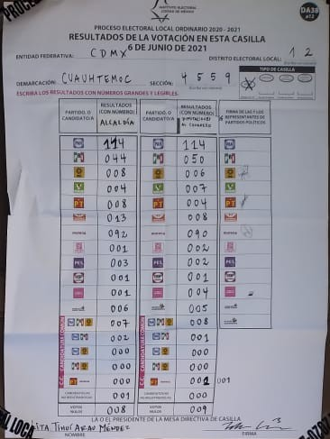
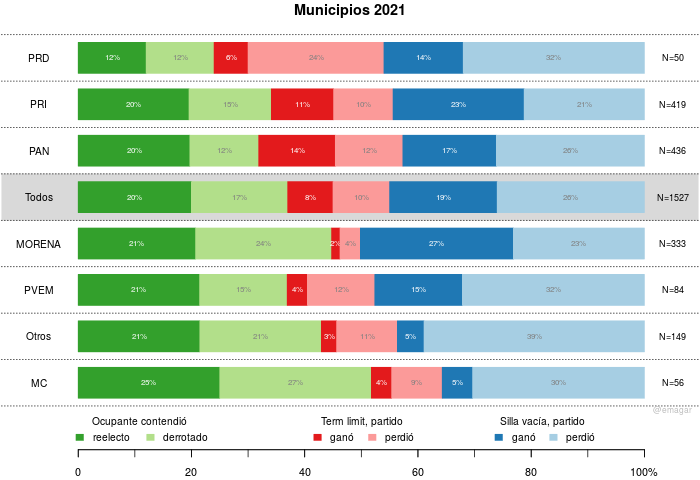

La reelección municipal no se ve clara desde la superficie. Sumergirse en los resultados revela interés reeleccionista. Agradezco a Daniela Guzmán Lerma y Sonia Kuri Kosegarten asistir en la recopilación de una parte de la información que reporto aquí.
En elecciones concurrentes con la federal intermedia pasada, todos los estados menos Durango e Hidalgo renovaron ayuntamientos municipales. Y en todos menos tres (Nayarit, Tlaxcala y Veracruz), los presidentes que concluyen un primer mandato no enfrentaron restricción constitucional para buscar otro periodo consecutivo en su gobierno.1 Describo algunos patrones de renominación y, en su caso, reelección de presidentes y sus partidos en 1,551 municipios (1,632 menos 81 del estado de Guerrero que no reportó resultados preliminares). Se desprende que el grupo de los interesados en repetir es más nutrido que los que no.
El diagrama 2 resume la evidencia preliminar. (Es preliminar porque proviene de los programas de resultados preliminares del INE y los cómputos oficiales y sentencias del Tribunal seguramente cambiarán algunos ganadores, pero suelen ser pocos.) La perspectiva de esta exploración es la del partido que defiende el municipio: ¿lo ganó nuevamente? ¿repostuló al ocupante?. Clasifico victorias y derrotas en tres categorías: en tonos de verde los municipios donde el ocupante contendió, en rojos donde no pudo contender por un tercer periodo consecutivo, en azules donde se retiró.

Figura 2: Presidentes municipales en la boleta (verdes), impedidos de tercer mandato (azules) y retirados (rojos) en 2021. Fuente: investigación propia con datos del prep del INE.
Destaco cuatro patrones que permiten extraer conclusiones.
Algo sobre usar tu coalición otra vez, en vez de terner que reconstruirla desde cero como en DCEM.
Habrá que revisar la institución para quitarle las dos liminationes a la reelección municipal—permitir un número indefinido de mandatos consecutivos y quitar el candado partidista de las nominaciones.
Saiegh, Samuels, Siavelis, Jacobson.
Congreso Argentino 1983-2001, 85 por ciento de los legisladores tuvieron un mandato único, 11 por ciento dos periodos, sólo 4 por ciento tres o más. De tener ambición política, es de naturaleza predominantemente progresiva—buscan volver a la pista provincial (Samuels, Jones). Chibber+? políticos siguen el dinero.
| Caso | % de legisladores que buscaron reelegirse | % de los que la buscaron que tuvo éxito | Tasa de retorno |
|---|---|---|---|
| Brasil | 70 | 60 | 42 |
| Chile | 71 | 83 | 59 |
| USA | 95 | 91 | 86 |
Breakdown partidista dice poco. Swing anti-morena.
Reelección de alcaldes en 2021 (excepto Chiapas, Guerrero, Michoacán, Nayarit, Oaxaca, Puebla, Durango, Hidalgo, Tlaxcala, Veracruz)
| Partido saliente | Alcalde reelecto | Alcalde derrotado | Silla vacía p. ganó | Silla vacía p. perdió | Term limit p. ganó | Term limit p. perdió | Total | N |
|---|---|---|---|---|---|---|---|---|
| pan | 22 | 12 | 14 | 22 | 16 | 13 | 100 | 314 |
| pri | 21 | 12 | 22 | 15 | 16 | 14 | 100 | 272 |
| prd | 11 | 11 | 11 | 36 | 0 | 32 | 100 | 28 |
| morena | 25 | 25 | 26 | 22 | 0 | 2 | 100 | 186 |
| pvem | 22 | 17 | 8 | 31 | 3 | 19 | 100 | 36 |
| mc | 29 | 22 | 2 | 29 | 5 | 12 | 100 | 41 |
| otros | 30 | 22 | 3 | 24 | 5 | 16 | 100 | 63 |
| Total | 23 | 16 | 17 | 21 | 11 | 12 | 100 | 940 |
(1) patrones municipales mixtos. un tercio se reeligió. poco más de 10 por ciento intentó y fracasó. algunos ejemplos.
(2) patrones municipales más interesantes. tres grupos. gana v pierde en c/u.
(3) reelectos son pocos. pero sumando term limited (que ya dieron evidencia de), hay un número sustancial de ambicón estática.
Nayarit, Tlaxcala y Veracruz inaugurarán la reelección consecutiva de gobernantes municipales en 2024. El único estado cuya constitución proscribe la reelección municipal es Hidalgo.
Joseph A. Schlesinger Ambition and Politics: Political Careers in the United States (Chicago, Rand McNally, 1966).